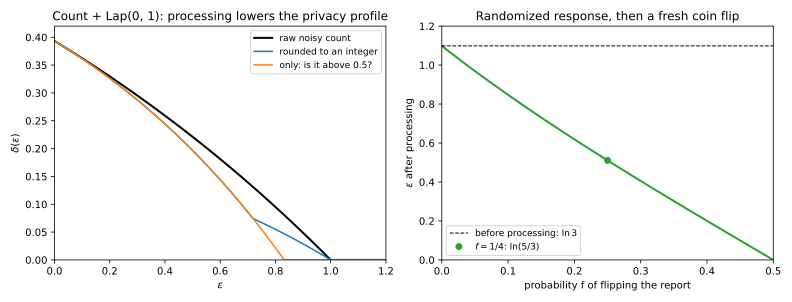
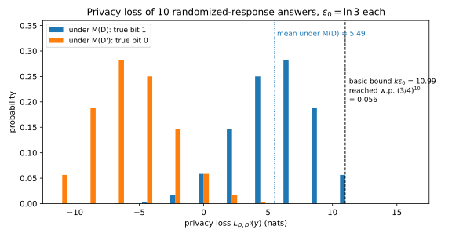

19 Post-processing, group privacy and composition
19.1 Why this matters
A private mechanism is never the whole system. You round its output and train models on it, your users each contributed fifty records, and an analyst asks a hundred queries or a training run takes thousands of noisy steps. Which of these cost privacy, and how do the costs add up? Three properties of differential privacy (DP) answer that without a new proof for every pipeline: you prove each building block once, then add up the costs.
All three follow from one quantity, the privacy loss of The definition of differential privacy: the log of how much more likely an output is when the data are \(D\) than when they are a neighbouring dataset \(D'\), one record different. Pure \(\varepsilon\)-DP keeps it between \(-\varepsilon\) and \(\varepsilon\) for every output. The one idea of this chapter is that privacy losses add along a path of datasets or across a sequence of mechanisms, and only average under processing. Each section applies it to one situation.
19.2 Post-processing
Suppose you transform a private output: round it, threshold it, fit a model to it. Several raw outputs can lead to the same processed one, and the probability of the processed output is the sum of theirs. So its likelihood ratio between the two datasets is a weighted average of their ratios. If every raw ratio lies between \(e^{-\varepsilon}\) and \(e^\varepsilon\), an average of them does too. Processing pools evidence, and pooling can only dilute it. This data processing inequality gives the rule: if \(M\) is \((\varepsilon, \delta)\)-DP and \(f\) is any function that does not read the data, deterministic or with its own coins, then publishing \(f(M(D))\) is \((\varepsilon, \delta)\)-DP too. Its whole privacy curve \(\delta(\varepsilon)\) lies on or below that of \(M\).
Collect a randomized-response answer at \(\varepsilon_0 = \ln 3\), which tells the truth with probability \(\frac34\), so each report is 3 times more likely under one true answer than under the other. Before publishing, flip it with probability \(\frac14\) using a fresh coin. A published 1 can come from a kept 1, whose ratio is 3, or from a flipped 0, whose ratio is \(\frac13\), and the two paths carry equal weight. The published 1 therefore has ratio \(\frac12(3 + \frac13) = \frac53\): it has probability 0.625 when the true bit is 1 and 0.375 when it is 0. The release is \(\ln\frac53 = 0.5108\)-DP, well below the original \(\ln 3 = 1.0986\), because the coin mixed outputs that pointed in opposite directions.
Processing you do for utility rarely mixes like that. Rounding a count with Laplace noise of scale 1 to an integer leaves its pure \(\varepsilon\) at 1.0000: a rounding cell that lies entirely below both possible counts holds outputs that all have the same loss, and an average of equal ratios is that ratio. Keeping only whether the noisy count exceeds \(\frac12\) merges outputs with losses of both signs, and lowers \(\varepsilon\) to 0.8318 (Figure 19.1). So report the guarantee of \(M\) and treat any gain from processing as a bonus you don’t count on.

The argument has one condition. The averaging used the same processing under \(D\) and under \(D'\), and that holds only if \(f\) never looks at the data. “Take the noisy top category, then report its exact count” fails it: the second step reads the data, so it is a new mechanism, and a non-private one. Within it, the rule is powerful: a model trained on DP statistics, synthetic data from a DP model and a dashboard are all post-processing, and so is every attack of Threat models and attacks, since an attacker’s guess is a function of the output, so the definition’s bounds hold even against attacks invented later. That is why a DP system privatizes at one narrow point, such as noisy counts or noisy gradients, and treats everything after it as public.
19.3 Group privacy
The definition protects one record, but a user may own fifty messages, and a household shares an address and an income. To cover datasets that differ in \(k\) records, walk from \(D\) to the other dataset one record at a time, through \(k\) neighbouring pairs. Each step can multiply an event’s probability by at most \(e^\varepsilon\), so \(k\) steps multiply it by at most \(e^{k\varepsilon}\): pure \(\varepsilon\)-DP becomes \(k\varepsilon\)-DP for the group.
The slack grows faster. Each step adds its own \(\delta\), and every later step multiplies everything accumulated so far, including the earlier \(\delta\)s, by \(e^\varepsilon\) again. So the \(\delta\)s pile up in a geometric sum. An \((\varepsilon, \delta)\)-DP mechanism is, for datasets \(k\) records apart, \[\Big(k\varepsilon,\ \delta_k\Big)\text{-DP}, \qquad \delta_k = \delta\sum_{j=0}^{k-1}e^{j\varepsilon} = \delta\,\frac{e^{k\varepsilon} - 1}{e^\varepsilon - 1}. \tag{19.1}\] Some mechanisms attain this bound exactly, so no better rule holds for every \((\varepsilon, \delta)\)-DP mechanism.
The price is steep. A per-record guarantee of \((0.5, 10^{-5})\) gives a user with 10 records \((5, 2.272 \times 10^{-3})\). A particular mechanism can do better than the general bound: for a count with Gaussian noise, ten records just shift the count by ten instead of one, and its exact guarantee for that user is \((5, 7.592 \times 10^{-4})\). That is still weak. At \(\varepsilon = 1\), a group of 10 multiplies \(\delta\) by 12818.3, and \(\delta\) had to be far below one over the number of people to begin with (The definition of differential privacy), so the group guarantee is often vacuous. Pure DP fares no better: \(0.1\)-DP per record is \(10\)-DP for a user with 100 records.
So if you care about users, don’t patch a per-record guarantee with group privacy: define neighbours as datasets that differ in one user’s records, bound each user’s contribution, and prove DP at that level directly. Group privacy is the fallback when you cannot.
19.4 Sequential composition
Now run several mechanisms on the same data, each with fresh noise, and let the adversary see the whole transcript of outputs. Because the noise draws are independent, the probability of a transcript is the product of the probabilities of its parts, so its privacy loss, a logarithm, is the sum of theirs. So if each \(M_i\) is \((\varepsilon_i, \delta_i)\)-DP, releasing all their outputs is \[\Big(\sum_{i=1}^k\varepsilon_i,\ \sum_{i=1}^k\delta_i\Big)\text{-DP}. \tag{19.2}\] This is basic composition. Unlike group privacy, the \(\delta\)s add plainly, because every mechanism compares the same pair of datasets: there is no chain of steps to multiply them through.
The argument only needed each mechanism to be private whatever the earlier outputs were, so the rule also covers adaptive composition, where an analyst picks each query after reading the last answer, as long as each query’s budget \((\varepsilon_i, \delta_i)\) is fixed in advance. If the budgets themselves depend on the answers (“keep going until the estimate looks good”), Equation 19.2 no longer applies in general; that needs privacy filters, covered in Advanced and optimal composition. Pure DP is the exception: each step’s privacy loss is at most its \(\varepsilon_i\) at every output, so the losses still add up to at most \(\sum_i\varepsilon_i\) whatever order the budgets were chosen in.
Basic composition is the true worst case, but that case is rare. Ask one person the same yes/no question \(k\) times, each with fresh randomized response at \(\varepsilon_0 = \ln 3\). The transcript in which every answer is truthful has loss exactly \(k\ln 3\), so no smaller pure \(\varepsilon\) holds. But that transcript has probability \((\frac34)^k\). Typical transcripts mix truthful answers, which add \(\ln 3\) to the loss, with lies, which subtract it, and the two partly cancel: the mean loss is half the bound (Figure 19.2). A sum of \(k\) independent bounded terms spreads only like \(\sqrt k\) around its mean, so if you allow a small \(\delta\) to write off the rare extreme transcripts, the \(\varepsilon\) you need is the mean plus a margin that grows like \(\sqrt k\). The mean per answer is \(\varepsilon_0\tanh(\varepsilon_0/2)\), about \(\varepsilon_0^2/2\) when \(\varepsilon_0\) is small, so for small per-step budgets the margin dominates and \(\varepsilon\) grows roughly like \(\sqrt k\) instead of \(k\). At \(\varepsilon_0 = 0.1\) and \(k = 1000\) answers, basic composition gives 100, while the exact \(\varepsilon\) at \(\delta = 10^{-6}\) is 19.345. Ten counts with Gaussian noise, each \((0.5, 10^{-5})\)-DP, cost \((5, 10^{-4})\) by basic composition, while their exact \(\varepsilon\) at that \(\delta\) is 1.504.

So basic composition suits a handful of releases. It already overstates the ten Gaussian counts by a factor of 3.3, and for thousands of training steps it is useless: you need the accountants of Advanced and optimal composition and Part 4, which exploit exactly this cancellation.
19.5 Parallel composition
If each mechanism sees a different, disjoint part of the data, one person’s record lands in only one part. The other parts get identical inputs in both worlds, so their outputs contribute zero privacy loss, and only the part that changed costs anything. Split the universe of possible records into disjoint parts by a rule fixed in advance, run \(M_i\) on the records in part \(i\) with independent noise, and suppose each \(M_i\) is \((\varepsilon_i, \delta_i)\)-DP under add/remove, where neighbours differ by one record added or removed. Then the whole release is \[\big(\max_i\varepsilon_i,\ \max_i\delta_i\big)\text{-DP under add/remove}. \tag{19.3}\]
This is why a histogram costs one \(\varepsilon\), not one per bin. Laplace noise of scale \(1/\varepsilon\) on each bin is \(\varepsilon\)-DP however many bins there are; for two bins the full edition’s script finds exactly 1.0000 at \(\varepsilon = 1\). The same reasoning is why local randomized response stays \(\ln 3\)-DP however many people answer: each report depends only on its owner’s answer, so changing one person’s answer changes one report. That is a replace guarantee; under add/remove, the number of reports itself reveals who took part.
The neighbouring relation matters here. Under replace, where one record’s value is changed, a record can move from one bin to another, and then two parts see a difference: the two-bin histogram becomes 2.0000-DP. That is why a histogram’s sensitivity is quoted as 2 under replace (The Laplace and Gaussian mechanisms). When each part is a fixed slot, as each person is in local randomized response, a replacement changes one slot only and the maximum applies again.
The argument also needs the partition to be fixed before the data are seen. “The top 10% of earners and the rest” moves its boundary when one high earner is added, which can shift other records across it and change both parts, so more than one mechanism sees a difference. Use fixed bins, or treat a data-dependent split as a mechanism of its own.
19.6 What composes and what doesn’t
Each property rests on an assumption that its argument used: post-processing needs the processing to ignore the data, composition needs independent noise and the same neighbouring relation at every step, and both need budgets fixed in advance. Most real failures break one of them, and badly.
Shared noise is the clearest case. Release the number of smokers and the number of smokers aged 40 or over, adding the same Laplace draw \(Z\) to both. Each release alone is 1-DP. But subtracting one from the other cancels \(Z\) and leaves the exact number of smokers under 40, which changes when Alice, a smoker aged 30, is removed. Composition assumed the transcript’s probability is a product of independent parts; with one shared draw it is not, and one release can undo the other’s noise. In 200,000 simulated runs, an attacker who subtracts the two releases is right about Alice every time, an accuracy of 1.0000. With fresh noise for each count the same attack reaches 0.6206, and no attack can beat 0.6967.
In code, the bug hides in two mechanisms seeded with the same random seed, a cached noise value re-added to a related query, or noise reused across the shards of a distributed system. Returning the same noisy answer to a repeated identical query is fine, because that is post-processing of one release. An exact statistic published elsewhere is the same mistake in another form: it can be differenced against your DP release just as the two counts were, and the guarantee covers only what your mechanism released. Finally, a guarantee proved under add/remove costs up to twice as much under replace, because a replacement is a removal plus an addition, so mixing the two relations inside one accountant is a factor-2 bug.
19.7 Code
Group privacy is where hand calculations go wrong most often, because \(\delta\) does not simply scale by \(k\). This snippet computes the three budget rules of this chapter:
from math import exp
def group_privacy(eps: float, delta: float, k: int) -> tuple[float, float]:
"""The guarantee for a group of k records, from an (eps, delta) guarantee per record."""
delta_k = delta * sum(exp(j * eps) for j in range(k))
return k * eps, delta_k
def basic_composition(budgets: list[tuple[float, float]]) -> tuple[float, float]:
"""The guarantee of several mechanisms run on the same data with fresh noise."""
return sum(e for e, _ in budgets), sum(d for _, d in budgets)
def parallel_composition(budgets: list[tuple[float, float]]) -> tuple[float, float]:
"""The guarantee of mechanisms run on disjoint parts of the data, under add/remove."""
return max(e for e, _ in budgets), max(d for _, d in budgets)
eps_k, delta_k = group_privacy(0.5, 1e-5, 10)
print(f"{eps_k:.1f} {delta_k:.3e}") # 5.0 2.272e-03
print(f"{group_privacy(0.5, 1e-5, 2)[1]:.3e}") # 2.649e-05
print(f"{group_privacy(1.0, 1.0, 10)[1]:.1f}") # 12818.3
print(basic_composition([(0.5, 1e-5)] * 10)) # (5.0, 0.0001)
print(parallel_composition([(0.5, 0.0)] * 50)) # (0.5, 0.0)The third line is the factor by which \(\delta\) grows for a group of 10 at \(\varepsilon = 1\). Basic composition here is a valid upper bound only; for the exact cost of many Gaussian releases, use an accountant. The full edition’s script checks every number in this chapter by exact computation and simulation:
uv run python code/part03-dp-foundations/properties.py19.8 Cheat sheet
| Property | Rule | Notes |
|---|---|---|
| Post-processing | \(f \circ M\) is \((\varepsilon, \delta)\)-DP | Only if \(f\) never reads the data; can lower \(\varepsilon\), never raise it |
| Group privacy | \(\big(k\varepsilon,\ \delta\frac{e^{k\varepsilon} - 1}{e^\varepsilon - 1}\big)\) for \(k\) records | Tight in general; prefer user-level neighbours |
| Basic composition | \((\sum\varepsilon_i, \sum\delta_i)\) | Also adaptive, with budgets fixed in advance; loose for many releases |
| Parallel composition | \((\max\varepsilon_i, \max\delta_i)\) under add/remove | Up to twice that under replace; partition fixed in advance |
| Shared noise | No guarantee at all | Every mechanism needs fresh noise |
Rules of thumb
- Privatize once, as early as possible; everything after it is free.
- For users with many records, define neighbours at the user level instead of relying on group privacy.
- Use basic composition for a handful of releases; for many, use an accountant.
19.9 Further reading
- Dwork & Roth, The Algorithmic Foundations of Differential Privacy (2014): post-processing, group privacy and basic composition (Proposition 2.1, Theorems 2.2 and 3.16), the standard reference.
- McSherry, “Privacy Integrated Queries” (SIGMOD 2009): parallel composition, and a query system built on post-processing and composition as its only rules.
- Near & Abuah, Programming Differential Privacy, the chapters on the properties of DP: sequential and parallel composition and post-processing, with code.
- Rogers, Roth, Ullman & Vadhan, “Privacy Odometers and Filters: Pay-as-you-Go Composition” (NeurIPS 2016): what changes when the budgets themselves are chosen adaptively.
Derivations. Every result in this chapter is derived step by step in the full edition’s chapter.